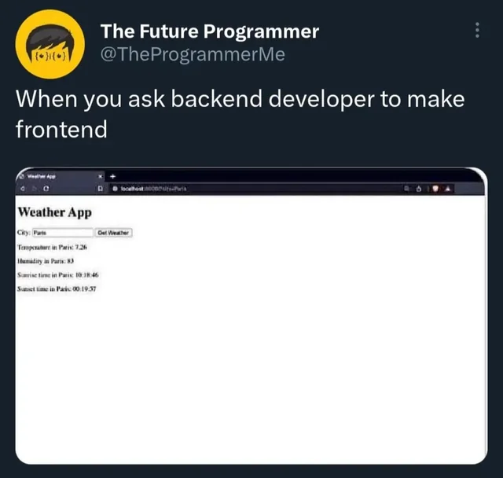

Celebrating 2 years of building HandsOnMoney
Yeah, I can't believe it. The first notes I took on building my financial app are dated early July 2024.
Of course I overestimated myself by a mile, and of course I underestimated the power of community by a hundred miles.
2 years ago I was still fresh off my "getting out of debt" journey; I just started using GnuCash and was struggling to understand the concepts. I should say switching from EveryDollar to GnuCash was a pretty dramatic change!
On one side, a simple app that we shared with my wife. On the other side was GnuCash - a next-level spreadsheet nerdery. My wife immediately stopped following the budget since it became virtually impossible for her.
So I decided to make a dent in the universe - and build an app that has double-entry accounting under the hood, and that is as simple as Mint.com or Money Copilot.
Should I say I failed at UI? I am a backend engineer by my nature, and my UI skills were somewhere here:

I absolutely did not see how much time making UI simple and approachable would take! I built an app, and my wife is like, "Tell me why my expense account always goes up?"
So I decided to pivot. Or at least to take the longer path - build an app for nerds, and then make it simple for busy moms like my wife.
That's how I spent the last 2 years:
- jumping through hoops of Swift - Apple's programming language. Boy, is it different from Java and C#!
- learning Apple's visual design
- iterating on UI/UX with my wife till the moment she is refusing to answer my "can I see how you do X?" questions
And of course community. I understood that I'm building a relationship rather than software. So many people pinged me over the Discord or iMessage! Everyone brought something important - an idea, validation, or even a hand to help.
The "people-dimension" is something I absolutely did not foresee. Being a true geek, I tried to stay away from "people-stuff" at my job. However users of HandsOnMoney showed me something important - "people stuff" is more important than "software-stuff". Your software can have all the features of the competitor yet without people using it - it's just a hollow barrel. And as you may see, I'm trying people-stuff: writing this blog, recording YouTube videos and talking with people.
So where is HandsOnMoney now?
It's still a super niche app. Non-nerds are still having the “WTF?!” impression the very moment they open the app. What is GnuCash? double-entry? expense is an account? While at the same time the geeks keep building solutions around GnuCash and HandsOnMoney to share expenses with their families.
What's next?
Simplicity. Community. And I hope a faster releases with more features.
My wife is still asking questions about how to log income, struggling with the constant need of synchronizing the data with "nerd's file" - a master copy of GnuCash file in iCloud. So I will keep simplifying screens to make them approachable even for a busy mom who does not care about double entry, while at the same time giving tools for us nerds to keep track of finances in a true double-entry way.
Also I recognize that HandsOnMoney is no longer about me or my family. It's turning into a small village phase. So I'm planning to bring more content from other people, their technical setups, finances, budgeting style, etc.
Also for the last 6 months I did not ship anything major or at least visibly major. My main focus was to address the most burning feedback and make HandsOnMoney code testable using unit tests and UI tests. I hope it will enable faster development while keeping bugs at bay.
Features on my priority list:
- More reports (e.g. net worth, expense breakdown, income breakdown)
- Minor things like (notes for splits, quick transaction creation)
- Family sharing via iCloud (CloudKit)
- Apple Wallet integration
And of course I'll force myself to talk and write more.
Stay tuned!